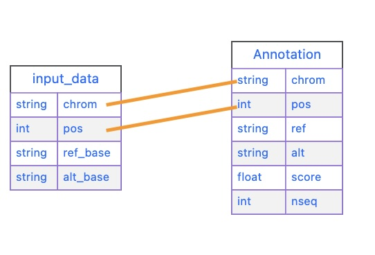

flowchart TD A[Initialize Module] --> B click A "#initializing-an-annotator-module" B[Load Annotation\ninto Database] --> C click B "#loading-annotations-as-a-sqlite-file" C[Map Annotations\nin Python] --> D click C "#mapping-our-annotator-file" D[Customize Output/\nDisplay]
4 Making an Annotator Module
4.1 Annotator Overview
4.2 Annotator Module Build Process
Click on each box in the flowchart below to jump to that part of the build process.
Creating an annotator module requires the following:
- Initializing an new annotator skeleton using
oc new annotator <modulename> - Loading an annotator file into a SQLite database (
<modulename>.sqlitess) usingsqlite3 - Mapping the annotator sqlite file in the
<modulename>.pyfile - Customizing the output using the
<modulename>.ymlfile
4.2.1 Anatomy of an annotator module
This is a quick review of the basic structure of an annotator module.
flowchart LR A[oc new annotator sift] --> B B["sift.py\n(queries data file)"] A --> C["sift.yml\n(Maps variants to annotation)"] A --> D["data/sift.sqlite\n(contains annotation table)"]
/Users/Shared/open-cravat/modules/annotators/sift
├── data
│ └── sift.sqlite ## contains annotations in sqlite format
├── sift.md ## describes how to use annotator
├── sift.py ## maps annotation columns to variant input
└── sift.yml ## configures output columns
3 directories, 5 files4.3 Initializing an annotator module
Before we create a new annotator, we need to find where modules are installed on the system. We can do this by using oc config md:
oc config md/Users/Shared/open-cravat/modulesNow we can create our new sift module using oc new annotator:
#| eval: false
oc new annotator siftAnnotator sift_annotator created at /Users/Shared/open-cravat/modules/annotators/siftIf we take a look at the file structure of our initialized module it looks like this:
tree /Users/Shared/open-cravat/modules/annotators/sift//Users/Shared/open-cravat/modules/annotators/sift/
├── data
│ └── sift.sqlite
├── sift.md
├── sift.py
└── sift.ymlSo now we need to get our annotations into the sqlite format, map it in our annotate() method, and then customize the display in our .yml file.
4.4 Loading annotations as a SQLite file
OpenCRAVAT requires us to supply our annotations as a SQLite file. sqlite3 is a database system that allows us to package our annotations in the .sqlite format, which makes our annotations accessible to OpenCRAVAT.
SQLite is available on most systems (MacOS/PC/Linux) as the sqlite3 command.
4.4.1 Fetching our SQLite annotations
Let’s take a look at an example .sqlite file before we load our own. In our annotator’s data/ directory (for example, /Users/Shared/open-cravat/modules/annotators/sift/data/), we can fetch an example .sqlite file. We’ll rename it sift.sqlite.
wget "https://github.com/KarchinLab/open-cravat-modules-karchinlab/blob/master/annotators/example/data/example.sqlite?raw=true" -O sift.sqlite--2024-05-24 07:31:22-- https://github.com/KarchinLab/open-cravat-modules-karchinlab/blob/master/annotators/example/data/example.sqlite
Resolving github.com (github.com)... 140.82.113.4
Connecting to github.com (github.com)|140.82.113.4|:443... connected.
HTTP request sent, awaiting response... 200 OK
Length: unspecified [text/html]
Saving to: ‘example.sqlite’
example.sqlite [ <=> ] 157.51K 602KB/s in 0.3s
2024-05-24 07:31:23 (602 KB/s) - ‘example.sqlite’ saved [161288]
Now that we have it in our annotator’s data/ directory, we can query it.
sqlite3 sift.sqlite 'select * from sift limit 10;'chr17|43045681|G|A|1.0|7
chr17|43045681|G|G|1.0|7
chr17|43045682|T|A|0.0|7
chr17|43045682|T|C|0.0|7
chr17|43045682|T|G|0.0|7
chr17|43045682|T|T|1.0|7
chr17|43045683|A|A|1.0|7
chr17|43045683|A|C|0.0|7
chr17|43045683|A|G|0.0|7
chr17|43045683|A|T|0.0|74.4.2 Importing a Comma Separated Value file to SQLite
Now that we’re more familiar with the SQLite format, we can start loading our own version. We’ll do this for a CSV (comma separated value) file first.
We’ll first create the sift.sqlite file by using sqlite3. This will put us into the sqlite3 prompt interface.
sqlite3 sift.sqliteSQLite version 3.43.2 2023-10-10 13:08:14
Enter ".help" for usage hints.
sqlite>
Interacting with the
sqlite3 prompt
There are two main ways we can interact with the sqlite3 interface: SQL Queries:
SELECT * from SIFT LIMIT 5;Note that SQL queries always end with a ;.
The other way we can interact with the interface are dot commands, such as .mode or .schema - these do not end with a ;. These dot commands are are often used to change internal settings for the sqlite database. For example, to set the import format to .csv, we can use:
.mode csvAgain, note that these commands don’t end with a ;. You will get errors if you terminate them with ;.
To make things easier to distinguish, we’ll use all caps for SQL and lowercase for dot commands.
4.4.3 Creating our Table
Before we load our data in, we need to create our table. This is important because our columns have different data types, and we have to map them to the SQLite data types:
CREATE TABLE "sift" ('chrom' TEXT, 'pos' INT,
'ref' TEXT, 'alt' TEXT,
'score' REAL, 'nseq' INT);
CREATE INDEX main_index on sift (chrom, pos, ref, alt);Note that score (the SIFT score) has a REAL data type.
Now that the table is created, we can load our sift.csv file. We need to change the mode to csv.
.mode csvNow we can import our data using the .import dot command. Because our sift.csv has a header row, we need to skip it, so we use the --skip 1 argument.
.import --skip 1 sift.csv siftWe can check that we loaded in our data correctly by using the .schema command and a SELECT * query:
.schemaCREATE TABLE sift (chrom text, pos int, ref text, alt text, score real, nseq int);
CREATE INDEX main_index on sift (chrom, pos, ref, alt);cha
.mode box
SELECT * FROM sift LIMIT 5;┌───────┬──────────┬─────┬─────┬───────┬──────┐
│ chrom │ pos │ ref │ alt │ score │ nseq │
├───────┼──────────┼─────┼─────┼───────┼──────┤
│ chr17 │ 43045681 │ G │ A │ 1.0 │ 7 │
│ chr17 │ 43045681 │ G │ G │ 1.0 │ 7 │
│ chr17 │ 43045682 │ T │ A │ 0.0 │ 7 │
│ chr17 │ 43045682 │ T │ C │ 0.0 │ 7 │
│ chr17 │ 43045682 │ T │ G │ 0.0 │ 7 │
└───────┴──────────┴─────┴─────┴───────┴──────┘When we’re done, we can use .exit to exit our session and save our .sqlite file.
.exitWe can double check our .sqlite file has our information by using sqlite3 to execute a query on the command line:
sqlite3 sift.sqlite 'select * from sift limit 5;'
Loading VCF Files as Annotations
Let’s try loading in an RNA Editing VCF file into a .sqlite file.
The first thing that we should notice is that there are multiple rows we need to skip to load our VCF data in. There are 4 lines of metadata + 1 header row that we need to skip to load our data in correctly.
tedladeras$ head GRCh38.RNAediting.vcf ##fileformat=VCFv4.2
##reference=GRCh38
##source=Rediportal
##INFO=<ID=RNAEDIT,Type=String,Description="A known or predicted RNA-editing site">
#CHROM POS ID REF ALT QUAL FILTER INFO
chr1 10187 . A G . . RNAEDIT=RADAR
chr1 10193 . A G . . RNAEDIT=RADAR
chr1 10211 . A G . . RNAEDIT=RADAR
chr1 10217 . A G . . RNAEDIT=RADAR
chr1 10223 . A G . . RNAEDIT=RADARAgain, we create our database:
sqlite3 vcf.sqliteThen we can define our table:
create table "vcf" ("chrom" TEXT, "pos" INT, "id" TEXT,
"ref" TEXT, "alt" TEXT, "qual" INT,
"filter" TEXT, "info" TEXT);And then we can load our VCF file. Note that we need to skip 5 rows (VCF file metadata and the header row) to load our data in.
.mode tabs
.import --skip 5 GRCh38.RNAediting.vcf vcfThen we can check that we loaded the data correctly:
.mode box
select * from vcf limit 10;Finally, now that we’re satisfied, we can .exit:
.exit4.5 Mapping our annotator file
Now that our data is loaded into our .sqlite file, we need to set up our mapping. If we look in sift.py, we’ll see there are stubs for three methods: setup(), annotate(), and cleanup():
flowchart LR A[sift_annotator.py] --method-->B["setup()"] A --method-->C["annotate()"] A --method-->D["cleanup()"]
This is what the .py file looks like:
cat /Users/Shared/open-cravat/modules/annotators/sift/sift.pyimport sys
from cravat import BaseAnnotator
from cravat import InvalidData
import sqlite3
import os
class CravatAnnotator(BaseAnnotator):
def setup(self):
"""
Set up data sources.
Cravat will automatically make a connection to
data/example_annotator.sqlite using the sqlite3 python module. The
sqlite3.Connection object is stored as self.dbconn, and the
sqlite3.Cursor object is stored as self.cursor.
"""
pass
def annotate(self, input_data, secondary_data=None):
"""
The annotator parent class will call annotate for each line of the
input file. It takes one positional argument, input_data, and one
keyword argument, secondary_data.
input_data is a dictionary containing the data from the current input
line. The keys depend on what what file is used as the input, which can
be changed in the module_name.yml file.
Variant level includes the following keys:
('uid', 'chrom', 'pos', 'ref_base', 'alt_base')
Variant level crx files expand the key set to include:
('hugo', 'transcript','so','all_mappings')
Gene level files include
('hugo', 'num_variants', 'so', 'all_so')
secondary_data is used to allow an annotator to access the output of
other annotators. It is described in more detail in the CRAVAT
documentation.
annotate should return a dictionary with keys matching the column names
defined in example_annotator.yml. Extra column names will be ignored,
and absent column names will be filled with None. Check your output
carefully to ensure that your data is ending up where you intend.
"""
out = {}
out['placeholder_annotation'] = 'placeholder value'
return out
def cleanup(self):
"""
cleanup is called after every input line has been processed. Use it to
close database connections and file handlers. Automatically opened
database connections are also automatically closed.
"""
pass
if __name__ == '__main__':
annotator = CravatAnnotator(sys.argv)
annotator.run()We will focus on the annotate() method first.
4.5.1 annotate() method
Our annotate() method is where we map our annotations in our .sqlite file to an input called input_data. input_data essentially is a single row of our genomic file to annotate represented as a dictionary.
This is what our input_data list looks like:
erDiagram
input_data{
string chrom
int pos
string ref_base
string alt_base
}
In order to annotate our file, we need to map each relevant element of input_data to a column in our .sqlite file.

input_data and our sift tablechrom = input_data["chrom"]
pos = input_data["pos"]
query = (f'select score, nseq from sift' \
'where chrom="{chrom}"'\
'and pos="{pos}"')
self.cursor.execute(query)
result = self.cursor.fetchone()The first thing we do is we extract chrom and pos from our list:
chrom = input_data["chrom"]
pos = input_data["pos"]Let’s look at our query next.
query = (f'select score, nseq from sift' \
'where chrom="{chrom}"'\
'and pos="{pos}"')Note that we are querying our table, so the table’s column is on the left size, and the input_data field is on the left. We are using variable substitution in our query to match the value to chrom in our table. In other words, our query works like this:
where chrom ="{chrom}"
^^^^. ^^^^
sift input_data
tableFinally, we execute our query by using the execute() method that was inherited in our class definition.
self.cursor.execute(query)
result = self.cursor.fetchone()The last bit calculates a new column, called prediction based on the actual SIFT score. We call everthing below
if result is not None:
score = result[0]
num_seq = result[1]
if score <= 0.05:
prediction = 'Damaging'
else:
prediction = 'Tolerated'Finally, we return our annotations as a dictionary. If there was no result, we return None:
return {
'score': score,
'seq_count': num_seq,
'prediction': prediction,
}
else:
return NoneOur final annotate() method looks like this:
def annotate(self, input_data, secondary_data=None):
chrom = input_data['chrom']
pos = input_data['pos']
ref_base = input_data['ref_base']
alt_base = input_data['alt_base']
query = f'select score, nseq from sift where chrom="{chrom}" and pos={pos} and ref="{ref_base}" and alt="{alt_base}";'
self.cursor.execute(query)
result = self.cursor.fetchone()
if result is not None:
score = result[0]
num_seq = result[1]
if score <= 0.05:
prediction = 'Damaging'
else:
prediction = 'Tolerated'
return {
'score': score,
'seq_count': num_seq,
'prediction': prediction,
}
else:
return None4.6 Configure sift_annotator.yml
Now that our annotate() method is filled in, we need to configure how our annotations will be displayed.
#| eval: false
cat /Users/Shared/open-cravat/modules/annotators/sift_annotator/sift_annotator.yml# 'title' is the name of the module that will be displayed to the user
title: Annotator Template
# 'version' is the version of the annotator. It is primarily used when
# publishing a module, but is required for all modules.
version: 0.0.1
# 'type' is the type of module described by this .yml file. In this case it is
# 'annotator'
type: annotator
# 'level' is 'variant' or 'gene'
level: variant
# output_columns has the columns that will be included in the output file.
# The columns are defined in a list. Each column has three required keys:
# name, title, and type.
output_columns:
# name is the internal name and is the key used to identify the column in the
# dictionary returned by the annotate method of annotator_name.py
- name: placeholder_annotation
# title is the display name of this column, similar to the title of the module.
# It can be changed without affecting the functionality of CRAVAT
title: Placeholder Annotation
# type is the data type of the value. It is primarily used when storing the
# results in a database. It may be one of string, int, or float.
type: string
# description is a short description of what the annotator does. Try to limit it
# to around 80 characters.
description: Template annotator. If you see this description in production, someone is wrong.
# developer is you!
developer:
name: ''
organization: ''
email: ''
website: ''
citation: ''After filling it out and cleaning it up, your sift_annotator.yml should look like this:
title: Sift Annotator
version: 0.0.1
type: annotator
level: variant
output_columns:
- name: prediction
title: Prediction
type: string
- name: score
title: Score
type: float
- name: seq_count
title: Seqs at Position
type: int
description: Annotates variants with sift scores and categories
[....]